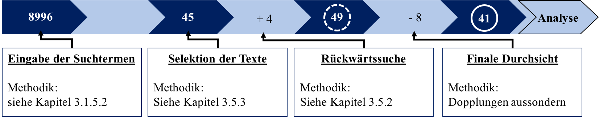
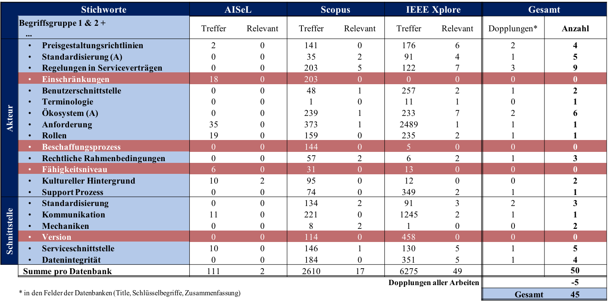
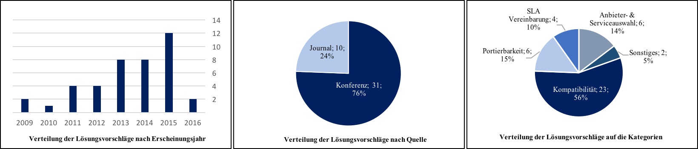
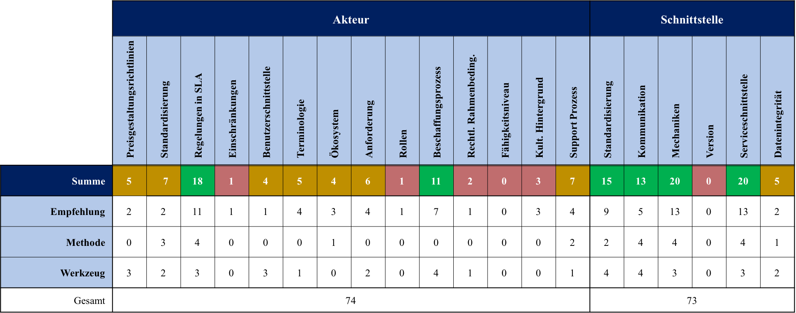
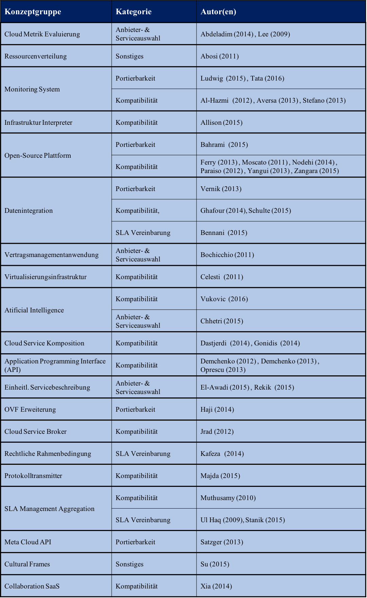
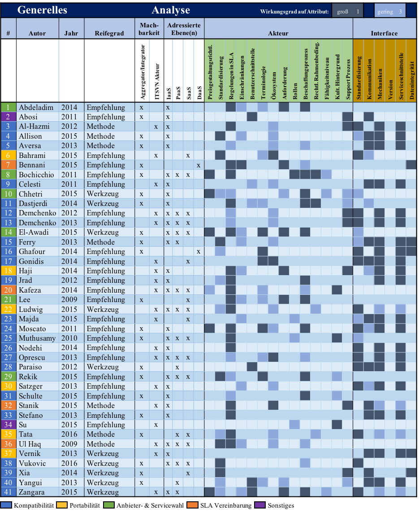

Durchführung und Ergebnispräsentation der Literaturrecherche
Die Suche erfolgte im Zeitraum von August bis Oktober dieses Jahres.
Die Recherche mit den gewählten Suchtermen in den 3 Datenbanken führte insgesamt zu 8996 Texten, die anhand der Selektionsmethodik ausgewertet wurden.
45 Texte verblieben nach Anwendung der von Okoli und Schabram (2010) vorgeschlagenen Aktionskarten.
Die Rückwärtssuche ergab weitere 4 Treffer.

Viele Texte wurden aussortiert, da sie nicht die Relevanz aufwiesen, die seitens der Selektionsmethodik erforderlich war.
Zudem handelten viele von CC, bezogen sich aber nicht auf ITSVN.
Ferner wurden viele der gesuchten Attribute nur am Rande erwähnt.
Auch wurde die Thematik Heterogenität in vielen Fällen nur peripher genannt.
Ebenfalls nannten etliche Texte keine geeigneten Vorschläge zur Bewältigung von Heterogenität in ITSVN.
Nach Ausschluss der Duplikate über alle Suchtermen und Datenbanken hinweg verblieben 41 Texte für die Literaturanalyse.
Die Anzahl der pro Attribut ausgewählten Texte für die ursprüngliche Suche ist der folgenden Abbildung zu entnehmen.
Die Gesamtzahl der nach der Sucheingabe gelisteten Texte je Datenbank ist in der Spalte `Treffer´ aufgezeigt.
Die Anzahl der hiervon ausgewählten Texte zeigt die Spalte `Relevant´.

Insgesamt variierte die Anzahl der ausgewählten Texte zwischen den Datenbanken: 49 Texte ergab die Suche für IEEE Xplore, 2 Texte für AISel und 17 Texte für Scopus.
Bedingt durch die 3 Felder der Datenbanken, in denen die Suchterme pro Attribut nacheinander eingegeben wurden, ergaben sich Dopplungen.
Die Anzahl der Dopplungen ist in der Spalte Gesamt unter Dopplungen abgebildet.
Die Suche für die Attribute Einschränkungen, Beschaffungsprozess, Fähigkeitsniveau und Version ergab keine relevanten Treffen (rot markiert).
Es sei vorweggenommen, dass die anschließende Analyse einzelnen Attributen Lösungsvorschläge zuordnete, für die die Literaturrecherche an sich keine Ergebnisse aufgewiesen hat.
Durchführung und Ergebnispräsentation der Literaturanalyse
Gemessen an der relativen Grundgesamtheit der ausgewählten Texte hat sich die Anzahl der Arbeiten mit relevanten Lösungsvorschlägen in den letzten drei Jahren verdoppelt.
Aufgrund steigender Veröffentlichungen ist anzunehmen, dass Heterogenität in ITSVN in der Literatur zunehmend an Bedeutung gewinnt.
Von den 41 Texten erschienen 31 auf Konferenzen (76%) und 10 in Journalen (24%).
Allen Texten konnte eine der Kategorien zugeordnet werden, die die Lösungsvorschläge nach ihrem Zweck untergliedern (Abbildung 19c): 6 Arbeiten wurden der Kategorie `Anbieter- und Serviceauswahl´, 6 der Kategorie `Portierbarkeit´, 4 der Kategorie `SLA Regelungen´ und 23 der Kategorie `Kompatibilität´ zugeordnet.
2 Texte wurden unter Sonstiges einsortiert. Ein Teil der Lösungsvorschläge hätte jedoch auch mehreren Kategorien gleichermaßen zugeordnet werden können, da der Vorschlag aus einer Vielzahl verschiedener Komponenten mit unterschiedlicher Zielrichtung bestand.
Diese Texte wurden letztendlich derjenigen Kategorie zugeordnet, für die der Lösungsvorschlag primär angelegt war.

Ein weiterer Gesichtspunkt der Analyse sollte prüfen, von wem der Lösungsvorschlag umsetzbar ist: Sind Aggregator und Integrator allein in der Lage, diesen Vorschlag umzusetzen oder werden alle Akteure im ITSVN benötigt?
Es erwies sich, dass Aggregator und Integrator nur 21 Lösungsvorschläge selbst umsetzen können (51%).
20 Lösungsansätze sahen eine Mitwirkung aller Akteure im ITSVN vor (49%).
Unter Hinzunahme der verschiedenen Kategorien zeigt die Auswertung der Lösungsvorschläge folgende Verteilung: Alle 6 Lösungsvorschläge der Kategorie `Anbieter- und Serviceauswahl´ sind durch den Aggregator und den Integrator allein umsetzbar.
5 der 6 Lösungsvorschläge aus der Kategorie `Portierbarkeit´ sowie die 4 Lösungsvorschläge aus der Kategorie `SLA Regelungen´ müssen durch alle Akteure umgesetzt werden.
Bei der Kategorie `Kompatibilität´ hielt sich die Verteilung nahezu die Waage.
13 Lösungsvorschläge waren durch den Aggregator und den Integrator umsetzbar.
Für 10 Lösungsvorschläge bedurfte die Umsetzung der Mithilfe aller Akteure im ITSVN.
Das Ergebnis belegt, dass die Auswahl der Anbieter- und Services mit Hilfe der analysierten Lösungsvorschläge vom Aggregator und Integrator ohne fremde Hilfe getroffen werden kann.
Die Heterogenität der vielen Anbieter mit ihrem vielfältigen Dienstleistungsangebot ist demnach vom Aggregator und Integrator für die Kategorie `Anbieter und Serviceauswahl´ gut zu bewältigen.
Anders sieht es für die Kategorien `Portierbarkeit´ sowie `SLA Vereinbarung´ aus.
Ein Tausch von Daten und Diensten, der bei einem Anbieterwechsel beispielsweise nötig ist, scheint nur unter Mithilfe aller im ITSVN beteiligten Akteure ohne großen Aufwand möglich zu sein.
Der Schwerpunkt der Lösungsvorschläge zur Vereinheitlichung von SLA Vereinbarungen zeigt, dass strukturierte und flächendeckende Vereinbarungen nur mit Hilfe aller an einem Liefernetzwerk beteiligten Akteuren zu treffen sind.
Für die Kategorie `Kompatibilität´ muss die Bewertung je nach Anwendungsfall erfolgen.
Im Hinblick auf das 3-Ebenen-Modell bezogen sich 17 Lösungsvorschläge rein auf die IaaS-, 2 rein auf die PaaS- und 5 rein auf SaaS-Ebene.
11 Texte nannten alle 3 Ebenen als zutreffend für ihren Lösungsvorschlag. Zudem bezogen sich 2 Lösungen explizit auf die Data-as-a-Service-Ebene (DaaS-Ebene), eine Variation der SaaS-Ebene.
Bei 3 Texten war eine Zuordnung nicht möglich. Die IaaS-Ebene scheint aufgrund der hohen Anzahl an Lösungsvorschlägen im Vergleich zu den anderen Ebenen ein wesentlicher Treiber für Heterogenität zu sein.
Der vergleichsweise hohe Aufwand, den Unternehmen bei der Nutzung dieser Ressourcen zu erfüllen haben, könnte hierauf zurückzuführen sein.
Dass relativ viele Autoren sich auf alle Ebenen oder auf keine Ebene bezogen, deutet darauf hin, dass ihr Lösungsvorschlag universell anzuwenden ist oder eine Sortierung nach dem 3-Ebenen-Modell nicht geeignet ist.
Für einzelne Texte bestand aufgrund der im Text verwendeten Wortwahl die Herausforderung, ein Verständnis für den Lösungsvorschlag zu entwickeln (Demchenko et al., 2013; El-Awadi & Abu-Rizka, 2015; Paraiso, Haderer, Merle, Rouvoy & Seinturier, 2012; Zangara et al., 2015).
In der Überschrift und im Haupttext wurden lediglich Begriffe wie „Framework“, „Architecture“ oder „Approach“ verwendet.
Begriffe wie „Application Programming Interface“ (API) oder „Proxy“ hingegen, die eine Lösung auf Anhieb näher umschreiben, fehlten.
Zudem beschrieben viele Autoren ihr Lösungsproblem mit anderen Termini als mit denen der gesuchten Attribute.
Die Benennung des Lösungsvorschlages und die Zuordnung zu den einzelnen Attributen wurde in diesen Fällen nach Auffassung und empfundenem Wirkungsgrad vorgenommen.
Die Verteilung der verschiedenen Reifegrade auf die einzelnen Attribute der Elemente `Akteur´ und `Schnittstelle´ ist in der folgenden Abbildung dargestellt.
Die Attribute, für die die Literaturrecherche keine relevanten Texte zugewiesen hat, wiesen nun einzelne Lösungsvorschläge auf: So wurde dem Attribut Einschränkungen 1 Empfehlung und dem Attribut Beschaffungsprozess 11 Empfehlungen und 4 Werkzeuge aus der Menge der Lösungsvorschläge zugewiesen.
Für die anderen beiden Attribute Fähigkeitsniveau und Version konnte weiterhin keine einschlägige Literatur gefunden werden.

Für das Element `Akteur´ nannten die Lösungsvorschläge besonders häufig die Attribute SLA Regulation und Beschaffungsprozess (grün hervorgehoben).
Hingegen wurden Einschränkungen, Rolle, rechtliche Rahmenbedingungen, Fähigkeitsniveau und kultureller Hintergrund weniger oft genannt (rot hervorgehoben).
Die restlichen fanden gemäß der Anzahl der 41 Texte die Häufigkeit, die erwartet werden durfte.
Von Seiten des Elements `Schnittstelle´ wurden bis auf die Attribute Version und Datenintegrität alle übrigen Attribute zur Problemlösung sehr oft genannt (grün hervorgehoben).
Insgesamt hatten die Lösungsvorschläge auf die Attribute des Elementes `Akteur´ 74-mal, für das Element `Schnittstelle´ 73-mal großen Einfluss. 8 Im Schnitt adressierte ein Lösungsvorschlag demzufolge ca. 4 Attribute.
Die Verteilung ist beinahe identisch, obwohl das Element `Akteur´ mit 14 Attributen mehr als doppelt so viele besitzt wie das Element `Schnittstelle´ mit 6 Attributen. Die Ursache könnte in der Interpretation des Elements `Schnittstelle´ liegen:
Die Lösungsvorschläge sehen zumeist eine technische Umsetzung vor, weshalb die Attribute des eher technisch ausgerichteten Elements `Schnittstelle´ besonders häufig adressiert wurden. Texte, die managementorientierte und rechtliche Lösungsvorschläge präsentierten, wurden kaum gefunden.
Ausnahmen bildeten die Arbeiten von Bochicchio, Longo und Mansueto (2011), Kafeza, Kafeza und Panas (2014) und Su (2015).
Insgesamt wurde der Reifegrad `Empfehlung´ 24-mal (59%), `Methode´ 7-mal (17%) und `Werkzeug´ 10-mal (24%) vergeben. Eine Bewertung, inwieweit eine Empfehlung in ihrem Reifegrad beispielsweise von einer Methode bzw. einem Werkzeug per Definition entfernt ist, hängt zum einen von der Industrie ab, zum anderen von dem Geschäftsbereich, für den diese gelten soll.
Für die Evaluierung der vorgestellten Lösungen erbrachten auf Basis der Performance 9 der 41 Texte einen Nachweis darüber, inwieweit der erbrachte Vorschlag mit bestehenden Lösungen vergleichbar ist.
So wurden beispielsweise Evaluierungen zur Abfragezeit von Datenanfragen (Bahrami & Singhal, 2015; Bennani, Ghedira-Guegan, Vargas-Solar & Musicante, 2015), zum Overhead im Übersetzungsprozess (Dastjerdi & Buyya, 2014; Stanik, Koerner & Kao, 2015; Vernik et al., 2013; Yangui & Tata, 2013), zur reinen Rechenleistung (Al-Hazmi, Campowsky & Magedanz, 2012) oder zur Reaktionszeit bei Benutzeranfragen (Ludwig et al., 2015; Tata et al., 2016) angeführt.
Die für die Evaluierung am meisten verwendeten Artefakte waren Prototypen und Simulationen.
Die genannten Vorschläge wurden entsprechend ihrer Konzeption zu unterschiedlichen Konzeptgruppen klassifiziert.
Nach Durchsicht aller 41 Texte konnten insgesamt 20 verschiedene Konzeptgruppen gebildet werden.
Die folgende Abbildung listet diese Gruppen samt Kategorie und Autoren auf.
Die Art und der Zweck der Vorschläge unterschieden sich innerhalb einer Gruppe zum Teil erheblich.
So präsentieren Ludwig et al. (2015) und Tata et al. (2016) ein Monitoring System, welches zu Portierbarkeitszwecken schnell, individuell und ohne großen Implementierungsaufwand angepasst werden kann.
Al-Hazmi et al. (2012), Aversa, Tasquier und Venticinque (2013) und Stefano, Morana und Zito (2013) hingegen möchten die Infrastruktur heterogener Anbieter mit einem universellen Monitoring System überwachen.
Chhetri, Vo und Kowalczyk (2015) und Vukovic und Hwang (2016) präsentieren eine Lösung, die auf den Einsatz von Artificial Intelligence (AI) basiert: Chhetri et al. (2015) widmen sich der Auswahl an Anbietern und Diensten, die je nach Anforderungsprofil dem Konsumenten aufbereitet werden.
Der Lösungsvorschlag von Vukovic und Hwang (2016) wiederum präsentiert einen Vorschlag zur Erreichung von anbieterunabhängig und automatisch generierten Migrationsprozessplänen, die sich während der Migration an veränderte Rahmenbedingungen dynamisch anpassen.
Den Gruppen Monitoring System, Open-Source Plattform, Datenintegration und API wurden besonders viele Lösungsvorschläge zugeordnet.
Zudem lassen sich Datenintegration und Monitoring System häufig der IaaS Ebene, Plattformen und Middleware der PaaS Ebene und Cloud Service Kompositionen der SaaS Ebene zuordnen.

Die Analyse der technisch gerichteten Lösungsvorschläge hat gezeigt, dass sich Kompatibilität und Portierbarkeit als Mit-Verursacher von Heterogenität nur durch die Implementierung einer gemeinsamen Semantik (Loutas et al., 2010), Technologie (Rochwerger et al., 2009) und Schnittstelle (Rodero-Merino et al., 2010) aller Anbieter lösen lassen.
Diese unterscheiden sich heute noch meist voneinander (Li et al., 2015; Rodero-Merino et al., 2010).
Cloud Semantik bezieht sich auf die Beschreibung von Cloud Diensten, die sog. Bedeutungslehre (Nelson & Uma, 2012).
Als Beispiel sei auf die Anbieter Amazon und Dropbox verwiesen.
Der Amazon S3 Speicher Dienst 9 arbeitet mit „Buckets“ und „Availability Zones“ (sog. Verfügbarkeitszonen).
„Buckets“ erstellen eine Art Ordner als Speicheradresse mit einer ein- malig vergebenen URL.
Die Verfügbarkeitszonen lassen den Konsumenten die Zentren zur Speicherung der Daten frei auswählen.
Zur Speicherung der Daten müssen die Nutzer sowohl die „Buckets“ als auch die hierfür zu belegenden „Availability Zones“ festlegen.
Im Gegensatz hierzu verwendet Dropbox 10 ein Konzept, das den traditionellen Dateisystemen ähnlich ist.
Nutzer können den Speicherort und die Region ihrer in Dropbox abgelegten Daten weder festlegen noch einsehen.
Cloud Semantik schließt zudem auch die Beschreibung von Diensten ein, die trotz identischer Funktionen je nach Anbieter unterschiedlich verwendet werden.
Eine Cloud Technologie umfasst vor allem Middleware Komponenten (sog. Dienstschicht) und Anwendungen, die zur Unterstützung von Cloud Diensten verwendet werden.
Die Infrastruktur der Anbieter kann nach außen verborgen bleiben. Im Bezug zu PaaS Diensten bezieht sich beispielsweise eine Technologie auf Anwendungsserver von Anbietern und seiner Programmiersprachen (Yangui & Tata, 2013).
So wird eine PHP Anwendung, die an das System von Amazon Beanstalk 11 angebunden werden kann, nicht bei Anbietern funktionieren, die diese Skriptsprache nicht unterstützen.
Ein Beispiel ist u.a. Heroku.
Cloud Schnittstellen bieten den Anwendern über eine eigens zur Verfügung gestellte API Zugriff zu den Diensten des Anbieters.
APIs enthalten die vom jeweiligen Anbieter verwendete Semantik und Technologie und stellen somit eine Schlüsselrolle für das Service Management dar.
Selbst APIs, die einfache Befehle wie die Erstellung, die Erweiterung oder den Stopp von Virtual Machines (VM) überbringen können, unterscheiden sich von Anbieter zu Anbieter.
Heterogenität wird aufgrund solcher Unterschiede in der Komposition von Diensten hervorgerufen.
Kompatibilität und Portierbarkeit sind als wichtige Faktoren zur Reduzierung dieser Heterogenität nur schwer möglich.
Die Analyse der Vorschläge hat gezeigt, dass viele Autoren einen geeigneten Lösungsansatz in der Anwendung von unabhängigen und generalisierten Plattformen sehen.
Viele Vorschläge bauen auf bereits etablierten Initiativen zur Reduzierung von Komplexität für CC Dienste auf.
Die Hälfte aller Texte nannte zumindest Initiativen, auf denen ihr Lösungsvorschlag entweder selbst aufbaute oder zu welchem ihr Vorschlag Parallelen aufwies.
Sehr viele Autoren der untersuchten Texte verwiesen auf die Initiativen, die eine technische Anpassung anstreben.
Es existieren zwar Initiativen der managementorientierten (siehe EuroCloud-SA und GRC Stack) und rechtlichen Ebene (siehe OCM). Jedoch konnte in den Lösungsvorschlägen diese nicht erkannt werden.
Dies bekräftigt die These, dass die untersuchten Lösungsvorschläge eine technische, weniger managementorientierte oder rechtliche Anpassung forcieren.
Die vier am häufigsten genannten Initiativen sollen kurz aufgeführt werden, da sie für das Verständnis und die Einordnung der Lösungen für den Leser hilfreich sind:
Das Open Virtualization Format (OVF) stellt ein öffentlich, erweiterbares Format bereit, die dem Konsumenten eine plattformunabhängige Umgebung liefert innerhalb heterogener Virtualisierungsplattformen.
OVF ist aus der Initiative der Distributed Managememt Task Force (DMTF) entstanden. Die Lösung von Haji et al. (2014) beispielsweise benutzt OVF als Fundament.
Das Open Cloud Computing Interface (OCCI) ist als Standard aus dem Open Grid Forum hervorgegangen und besteht aus einem REST Protokoll und einer API, die die Integration, Kompatibilität und Portierbarkeit verschiedener Cloud Infrastrukturen ermöglichen soll.
Es ist nicht nur auf IaaS Modelle anwendbar, sondern wurde auch für PaaS und SaaS Modelle erweitert.
Die Arbeiten von Jrad, Tao und Streit (2012) und Aversa et al. (2013) integrieren OCCI in ihre Lösung.
Das Cloud Data Management Interface (CDMI) – zugehörig zu der Storage Networking Industry Association (SNIA) - schafft ein funktionales Interface mit dem Hauptfokus auf Datenmanagement.
Dies soll das Auffinden individueller Spezifikationen und das ordnungsgemäße Verwalten gespeicherter Daten erleichtern.
Das CDMI definiert die funktionalen Schnittstellen, über die andere Anwendungen die Befehle an die Cloud weitergeben.
Das Lösungskonzept von Vernik et al. (2013) besteht aus Teilen des CDMI.
Topologie und Orchestrierung zur Spezifizierung von Cloud Anwendungen (TOSCA) streben eine Standardisierung in der Bezeichnung der Dienste, Komponenten, Beziehungen und Abhängigkeiten an.
Ein Einsatz automatisierter Cross-Plattformen soll damit ermöglicht werden.
Weitere detaillierte Informationen zum Normungs- und Standardisierungsumfeld von CC liefern Bernnat et al. (2012).
Die dieser Analyse zugrundeliegenden Ergebnisse sind in der Konzeptmatrix zusammengetragen.
Die folgende Abbildung zeigt einen Ausschnitt dieser Matrix, aufgebaut nach Reifegrad, Machbarkeit, Einordnung in das 3-Ebenen-Modell und dem Wirkungsgrad je Attribut (groß und gering).
Die gesamte Matrix kann unter dem Reiter Downloads eingesehen werden.
